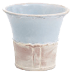
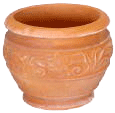

| Name | Description | Image |
| Red Earth |
This ceramic pot is hand-crafted from the finest materials so that each one is unique. The pots are coated to increase durability. |
 |
| Night Sky |
This glazed ceramic pot is available in lighter and darker shades. These are especially well suited to formal gardens. |
 |
| Country Planter |
The more traditional look of this pot with its glaze design and decorate pattern will make it ideal for an informal outdoor setting. |
 |
| Chinese Clay Flower Pot |
This imported pot stands a little over 40 cm in height. The sealed finish makes it suitable for outdoor use. |
 |
| Italian Terracotta |
A very traditional-looking 20 cm high pot with a narrow design, making it perfect for long-stemmed flowers. |
 |
| Carved Terracotta |
The carved design on this small pot can add some class to an entrance area or office setting. |
 |
| Classic Clay |
A classic design available with a glazed finish to make it suitable for your outdoor patio. |
 |